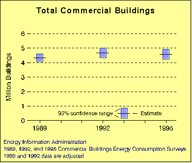
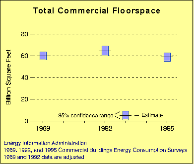
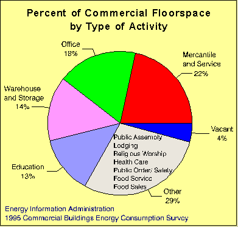
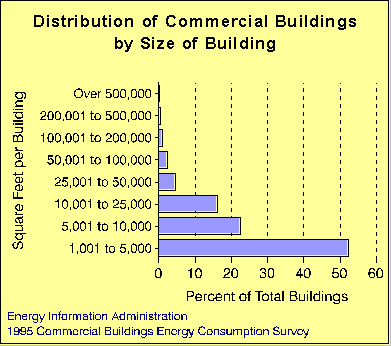
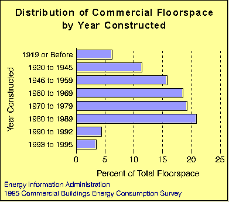
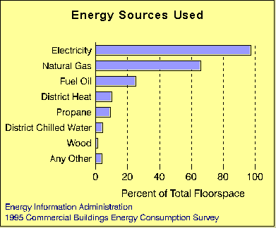
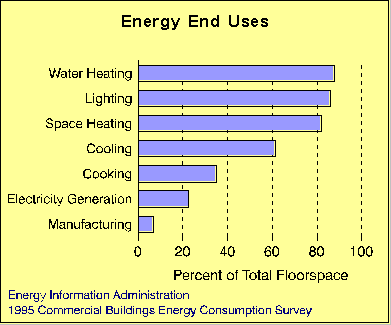
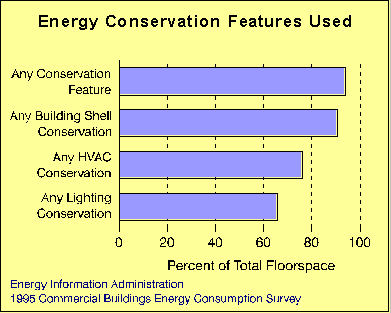

| |
Executive Summary
The Commercial Buildings Energy Consumption Survey (CBECS) collects information on physical characteristics of commercial
buildings, building use and occupancy patterns, equipment use, conservation features and practices, and types and uses of energy
in buildings. The survey also collects information on the amount of energy consumed and the costs for energy in commercial
buildings.

Total Commercial Buildings and Floorspace
- In 1995, there were 4.58 million commercial buildings
and 58.78 billion square feet of commercial floorspace
in the United States.
- There were no statistically significant changes in the
total number of buildings or total amount of floorspace
in 1995 when compared with similar buildings and
floorspace data from the 1989 or 1992 CBECS. Data
from 1989 and 1992 were adjusted to be consistent with
the slightly different definition of commercial building
population used by the 1995 CBECS.
- The total number of commercial buildings in 1995 was
only 6 percent of total residential buildings in 1993 but
had 32 percent of total residential floorspace (residential
data from the 1993 Residential Energy Consumption
Survey).
- The mean size of all commercial buildings in 1995 was
12,840 square feet. In comparison, the mean size of residential buildings in 1993 was 2,370 square feet.


Major Activities
- Four activities dominated commercial floorspace--mercantile and service, office, warehouse and storage,
and education.
- Those four activities comprised 67 percent of total
floorspace (and 63 percent of commercial buildings).
- The other principal activities, which included public
assembly, lodging, health care, and food sales and
service, comprised 29 percent of floorspace (and 31
percent of buildings). Vacant buildings accounted for 4
percent of floorspace (and 6 percent of buildings).

Size of Buildings
- Most commercial buildings were found in the smaller size categories. More than half were in the smallest category
(1,001 to 5,000 square feet) and three-quarters in the two smallest categories (1,001 to 10,000 square feet).
- Less than 5 percent of buildings were larger than 50,000
square feet, and less than 2 percent were larger than
100,000 square feet.
- The mean size of all commercial buildings was 12,840
square feet.

Age of Buildings
- Less than 8 percent of commercial floorspace and 10
percent of buildings were constructed in the 1990's.
- More than 70 percent of buildings and floorspace were
constructed prior to 1980 and more than 50 percent
before 1970.

Major Energy Sources Used in Commercial Buildings
- Electricity and natural gas were used widely in commercial buildings. Electricity use was nearly universal (97 percent
of floorspace and 95 percent of buildings), while natural gas was used for two-thirds of floorspace and 55 percent of
buildings.
- Only fuel oil, of the other major energy sources, was
used for as much as a quarter of total floorspace (but in
less than 14 percent of buildings). The other sources
were used for no more than 11 percent of floorspace (or
in 13 percent of buildings).
- The relative use (both percent of floorspace and
buildings) of major sources remained unchanged from
use in previous CBECS.

Major Uses of Energy in Commercial Buildings
- The four dominant uses of energy in commercial
buildings were water heating, lighting, space heating,
and cooling. All of these uses occurred in at least 60
percent of total floorspace (and in 70 percent of
buildings).
- The percent of total floorspace in commercial buildings
that had the capability to generate electricity increased
from less than 10 percent in 1989 to more than 20
percent in 1995. No other end use showed a significant
change.

Energy Conservation Features and Practices
- Energy conservation was widely practiced in commercial buildings. An overwhelming majority had installed or
employed some type of conservation feature or practice (94 percent of floorspace and 89 percent of buildings).
- Most commercial buildings employed some kind of
building shell; heating, cooling, and ventilation (HVAC);
or lighting conservation feature.
- Use of conservation features and practices became more
common. Several specific types of building shell and
lighting system conservation features showed significant
increases in use from use in previous CBECS.
Return to "Table of Contents"
File last modified: August 14, 1997
- Contacts:
- alan.swenson@eia.doe.gov
- Alan Swenson
- Principal Author
-
- Joelle Michaels
joelle.michaels@eia.doe.gov
CBECS Manager
URL: http://www.eia.gov/consumption/commercial/data/archive/cbecs/char95/ex_sum.html
If you are having any technical problems with this site, please contact the EIA Webmaster at
wmaster@eia.doe.gov
| |